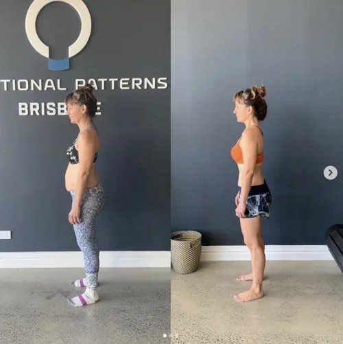
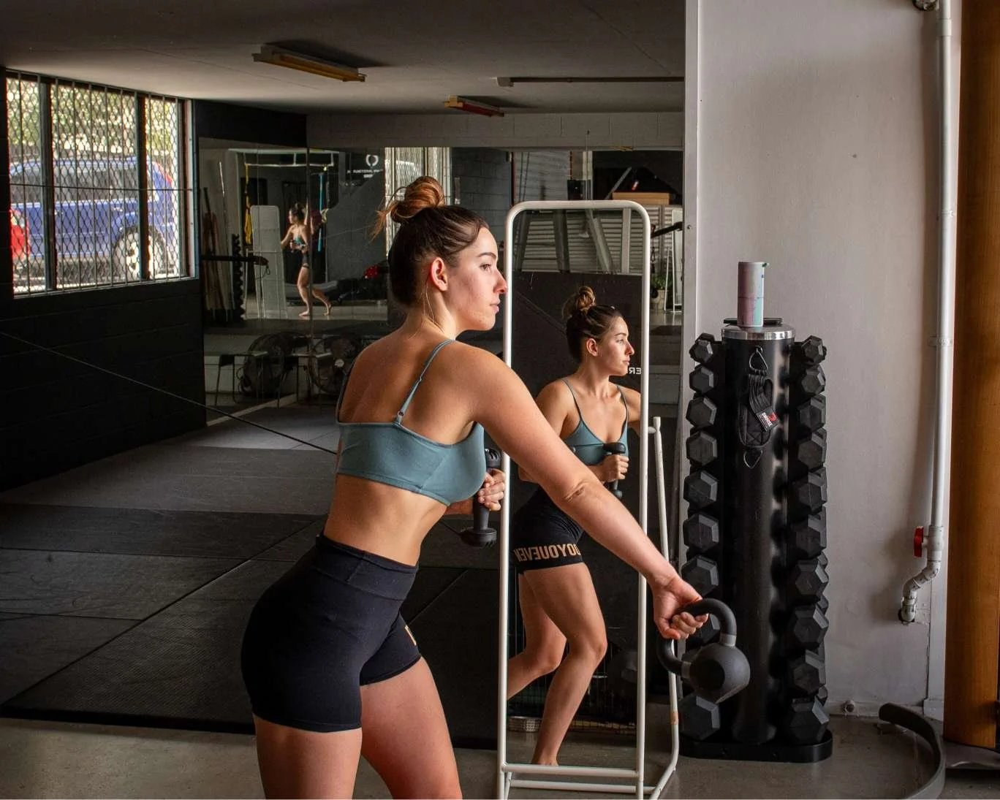

If you’re dealing with a lower back ache on the left side, you’re not alone.
Many people search for answers after noticing:
-
a dull ache in the lower left side of the back
-
pain above the left hip
-
discomfort that spreads toward the abdomen or side
-
stiffness when standing, walking, or sitting
Some people experience lower back and abdominal pain at the same time, while others feel pain that travels toward the hip or side of the stomach.
Most articles list possible diagnoses or suggest pain relief strategies. But they rarely explain why the body develops pain on one side in the first place.
Understanding that mechanism is the key to solving the problem long term.
What Does Lower Back Ache on the Left Side Mean?

A lower back ache left side simply means pain is localised to one side of the lumbar spine.
This can present as:
-
lower left back and side pain
-
a sore lower back left side
-
pain above the hip
-
discomfort in the lower back and abdomen
Sometimes the pain stays in the back.
Other times it spreads toward the abdomen, pelvis, or hip.
When pain radiates toward the abdomen or side, people often worry about organ problems.
While internal conditions can occasionally contribute, many cases of left flank pain or lower left back pain are mechanical.
That means the issue is related to how forces move through the body during movement.
Why Pain Often Appears on One Side of the Lower Back
Pain on only one side of the body usually reflects asymmetry in how the body distributes load.
The human body is designed to move through coordinated patterns during walking and standing.
When those patterns become inefficient, certain areas of the spine absorb more stress than others.
Over time this can produce:
-
left side hip pain
-
pelvic pain left side
-
lower back ache left side only
These patterns often develop gradually through:
-
prolonged sitting
-
poor movement habits
-
repetitive training patterns
-
reduced rotational movement through the torso
When movement becomes unbalanced, the lower spine often compensates.
Why Lower Back Pain Can Also Affect the Abdomen

Many people notice lower back abdominal pain on the left side or discomfort that wraps around the side of the body.
This happens because the lower back, abdomen, and pelvis are connected through shared muscular and fascial systems.
Structures like the quadratus lumborum, obliques, and deep spinal stabilisers link the spine to the abdomen.
When these structures experience excessive tension or imbalance, pain may appear as:
-
pain on the left side of stomach and lower back
-
lower belly back pain
-
back pain that radiates to the abdomen
In many cases the body is simply signalling that load is not being distributed efficiently through the trunk.
Common Causes of Lower Left Back Pain
Several factors can contribute to lower back ache left side.
1. Movement asymmetry
When one side of the body consistently bears more load during walking or standing, the lower back often compensates.
This can produce low left back side pain over time.
2. Reduced spinal rotation
The spine is designed to rotate during walking.
When this rotation becomes restricted, the lumbar spine often absorbs excessive stress.
This may contribute to dull ache in the lower back left side.
3. Pelvic imbalance
If the pelvis tilts or rotates unevenly, the muscles connecting the pelvis and spine may become overloaded.
This can create pelvic pain on the left side and lower back pain simultaneously.
4. Poor load distribution during movement
Many people unknowingly shift weight onto one side of the body during daily movement.
Over time this creates uneven loading through the lower back.

Why Most Treatments Only Provide Temporary Relief
Common recommendations for lower back pain include:
-
stretching the lower back
-
strengthening the core
-
applying heat or massage
-
resting
While these strategies can reduce symptoms temporarily, they often fail to address the root cause.
If the body continues repeating the same inefficient movement patterns, the stress that created the pain remains.
This is why lower back pain left side above hip often returns after short-term relief.
What Actually Helps Reduce Lower Back Ache Left Side
The goal is not simply to reduce pain.
The goal is to improve how the body distributes force during movement.

Effective strategies often focus on restoring:
Balanced movement patterns
Improving coordination between the ribcage, pelvis, and spine helps reduce excessive stress on one side of the body.
Rotational mobility
The spine and torso are designed to rotate during walking.
Restoring this rotation helps distribute forces more evenly across the body.
Efficient walking mechanics
Humans take thousands of steps every day.
If those steps reinforce imbalance, the lower back continues absorbing stress.
Improving walking mechanics can significantly influence lower back and side pain.
When to Seek Professional Help
If lower back ache left side persists, worsens, or begins affecting movement, it may be helpful to seek professional guidance.
A movement-focused assessment can help identify:
-
asymmetries in gait
-
spinal movement restrictions
-
pelvic imbalances
-
inefficient movement patterns
Understanding how your body moves often reveals why the pain developed in the first place.

Addressing Lower Back Pain at Functional Patterns Brisbane
At Functional Patterns Brisbane, we examine lower back pain through the lens of biomechanics.
Rather than only treating symptoms, we assess how the body distributes forces during walking, standing, and movement.
By improving these mechanics, many people experience improvements in:
-
lower back ache left side
-
left side hip pain
-
pelvic tension
-
persistent lower back stiffness
When movement patterns improve, the stress that drives chronic back pain often decreases.